Ключевая идея: К концу квеста
каждый из участников должен для себя поставить в
конце этой фразы знак препинания – вопросительный или восклицательный.
Правила квеста:
В начале игры дети разбиваются на команды
(приблизительно по 10 человек), придумывают их название. Параллельно может
играть в одну квест-игру несколько команд, за каждой
из которых закрепляется куратор-педагог, играющий
роль скептика, сомневающегося в существовании Бога. В случае одновременного
участия нескольких команд, задания даются таким образом, чтобы дети двигались в
противоположных направлениях, и встретились только в финале игры на последнем
этапе. Начинать лучше с одного из первых трех этапов. А в заключении собрать
всех детей на последнем этапе «Добро и зло». За каждой командой закрепляется определенный цвет, которым обозначено месторасположение
первого этапа на карте. Необходимо распределить между участниками каждой команды роли:
Ø капитан – принимает окончательные решения, руководит порядком
в команде;
Ø секретарь – записывает решения команды;
Ø хранитель – хранит заработанные командой
артефакты.
|
Командам предстоит перемещаться от
этапа к этапу, выполняя определенные задания. На картах, которые они получают в начале
игры, обозначено соответствующим цветом |
|
месторасположение первого этапа. Месторасположение последующих этапов
дети должны будут определить в процессе игры. Организаторам квеста нужно
продумать путь для каждой из команд, чтобы они не
пересекались. На каждом этапе ребят ждет смотритель: определенный
персонаж, который вступает с детьми и
сопровождающим их «скептиком» в диалог и дает задания, касающиеся темы этапа
и месторасположения следующего этапа. За выполнение заданий дети получают
фрагмент древнего артефакта (часть глиняной
мозаики, которую можно будет сложить по завершении всех заданий – см. рис.
1). Ведущий приветствует
ребят, объясняет правила игры, отношения в команде. Командам вручаются
маршрутные карты. Квест нацелен не на скорость прохождения этапов, а на
качество. Важно заложить достаточно времени на каждый
из этапов, чтобы достичь поставленных целей (15-20
минут). На последнем этапе команды собираются вместе, и организатор делает
вывод по теме квеста: какой
знак препинания каждый из детей
поставит после слов «БОГ ЕСТЬ...» Реквизит: |
1. Карты территории, на которой проходит квест. Для каждой команды ее цветом помечено на карте место
проведения первого этапа.
- Блокноты и ручки для секретарей команд.
- Сумки для хранителей артефактов/пакеты
- Сделайте подобие
древнего пергамента (состарьте плотную бумагу при помощи кофе и огня), на
которое также нанесите похожий рисунок.
Разрежьте каждый на 7 фрагментов. Эти фрагменты
дети будут получать при прохождении этапов.
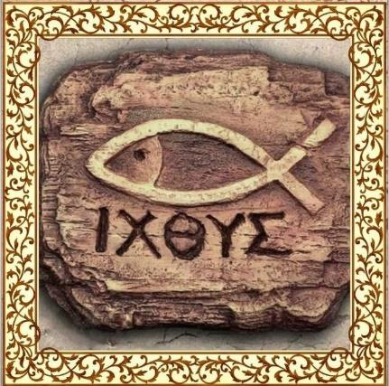
Рис. 1
- Костюм профессора Мефодия Авдеевича, стол с книгами и Библиями для каждой команды.
- Шифровки с местоположением этапа «Библия и наука». Используйте
шифр «Пляшущие человечки»:
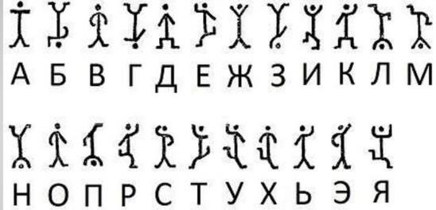
- Халат и очки профессора Наума Наумыча,
ноутбук, пробирки, склянки и т.д. для его научной
лаборатории.
- Распечатка или фото в ноутбуке печати пророка Исаии:
|
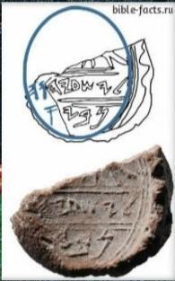 |
|
Рис. 2 |
- Бутылки по числу команд с заваренной
кипятком петрушкой или очень крепкий зеленый чай,
кусочки лимона.
- Три 1,5-литровые бутылки с водой, в крышках
которых просверлена дырочка, пластиковые стаканчики, два ведра, воронка.
- Часы.
- Записки по числу команд с месторасположением этапа «Креационизм ∨ эволюция?», написанные прозрачным крахмальным клейстером (крахмал+вода); йод,
разведенный в воде, ватные диски.
- Компьютер с фотографиями живых ископаемых на этап «Креационизм ∨ эволюция?»
- Распечатки задания на 3 этапе по числу команд.
- Шифровки к 3 этапу по числу команд.
- Лупа, фото и описание жука-бомбардира:
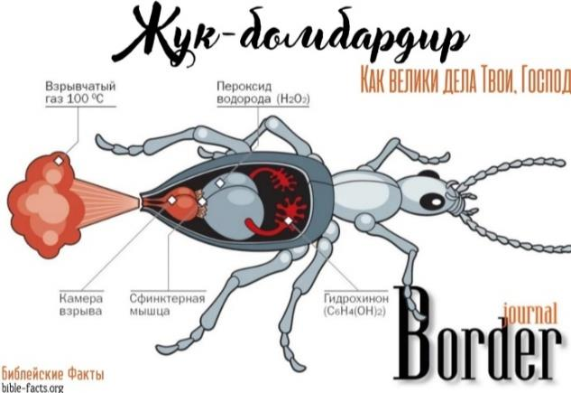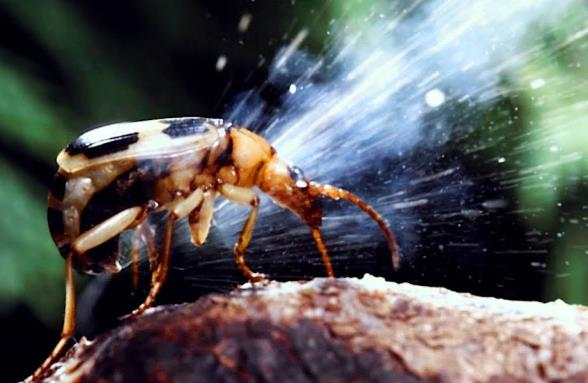
Рис. 3 Рис. 4
- Призы к этапу «Уникальность творения» (любая сладость, связанная с
живым творением – мармеладные червячки, шоколадный
заяц, конфеты «Мишка на севере» и т.п.)
- Кастрюля с крышкой, из-под которой свешиваются отрезки пряжи разной
длины («макаронины»).
- Карточки с буквами, из которых составляется название местонахождения
этапа «Всемирный потоп».
- Реквизит смотрителя этапа «Всемирный
потоп»: туристическая одежда, рюкзак, лупа, веревка, лопата. Толстая
тетрадь или папка с бумагами, компьютер с фото и видеоматериалами по теме.
- Покрывало-ковчег.
- Шифровки месторасположения этапа «Христос воскрес?∨!»
по числу команд, сделанные с помощью Азбуки моряков:
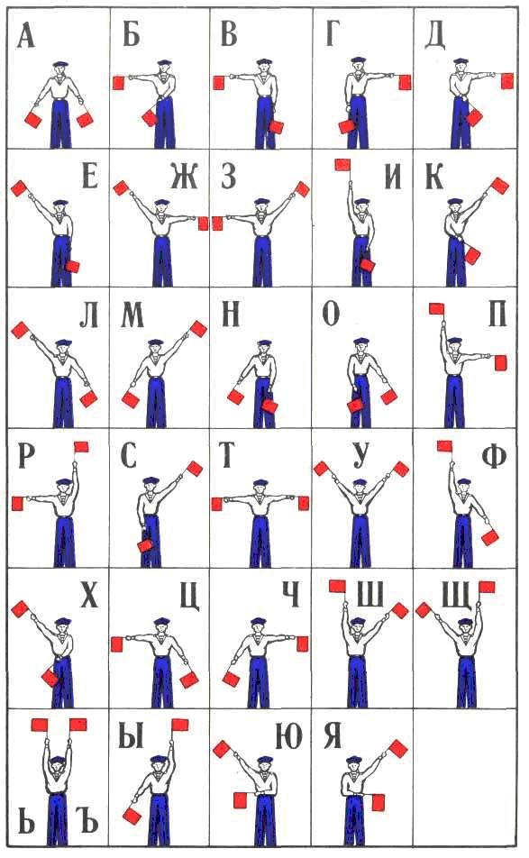
|
28. Составьте математический
пример для последнего этапа.
29. Если есть возможность, приготовьте в подарок всем
участниками квеста рыбки- символы христианства в любом виде: брелки, подвески,
браслеты и т.п.
Этап
1
Подлинность
Библии
Смотритель: Профессор Библиологии Мефодий Авдеевич (в очках,
сидит за столом, заваленном множеством справочной
литературы по Библии).
Каждую команду сопровождает взрослый человек, играющий роль
скептика, сомневающегося в существовании Бога, достоверности Библии и
необходимости веры. Он начинает диалог с профессором.
- Мефодий
Авдеевич, дорогой,
приветствуем Вас!
- Очень рад, очень рад. Проходите,
друзья!
- А Вы все читаете и читаете! Дорогой профессор, Вы скоро совсем потеряете зрение!
- Главное, что я никогда не потеряю
свою веру!!!
- И опять Вы о своей
вере! У каждой веры должно быть свое основание. А я
его не вижу!
- Вот же оно! – Профессор показывает Библию.
- То же мне основание! Вы верите в
то, что написано в этой древней
книжке? Ей же сотни лет!
- О, дорогой
мой, не сотни, а тысячи!!! Поверьте, Господь, открывший
Свою волю человеку в Священном Писании, способен сохранить его неизменным на
протяжении тысячелетий.
- И все-таки я не пойму, как тысячи людей, которые
переписывали такую толстую книгу столько лет, не сделали ни одной
ошибки. Они в школе на одни пятерки учились?
- Священные Писания переписывали
только специально обученные для этого люди - масореты,
ведь этот процесс требовал особой тщательности.
Чтобы при списывании даже случайно не вкралась
какая-либо ошибка, была разработана система подсчета слов и букв в каждом
свитке. Так, количество букв в пяти книгах Моисея равно 305 607, в прочих
книгах — 846 600, а сумма букв всего Ветхого Завета составляет 1 152 207. Вот!
- Ну ладно, убедили. А вас, ребята?
- Давайте
тогда проверим, годитесь ли вы в масореты.
У нас есть несколько частей свитков
со стихами из Библии. Части каждого стиха надо собрать в правильном порядке. Но
так как это старые свитки, чтобы их не повредить, составлять их может только
один человек в перчатках.
Первый выбранный человек получает
стих, разрезанный по словам, за выделенное время он должен выложить его по
порядку. В тот момент, когда участник посчитает стих правильно выложенным, он
должен крикнуть «да будет так». Если порядке есть ошибка, профессор сообщает
ему об этом, и он продолжает менять до окончания времени. Команда может
говорить подсказки. Если по окончании времени стих не будет выложен правильно, команда
должна вспомнить и правильно процитировать любой сих из Библии на замену.
И так со всеми стихами по порядку.
Участник, выполняющий задание, меняется.
За правильно выполненное задание
дети получают фрагмент артефакта и в подарок от профессора Мефодия Авдеевича
Библию.
Местонахождение следующего этапа
детям нужно расшифровать с помощью «Пляшущих человечков».
Этап
2
Библия
и наука
Смотритель: Профессор Наум Наумыч (в
халате, очках, с ноутбуком; возможен реквизит в виде пробирок, склянок, пипеток
и т.д.)
«Скептик» начинает диалог с профессором:
- Здравствуйте,
Наум Наумыч!
- Здравствуйте!
Добро пожаловать в мою лабораторию, ребята!
- Спасибо! Мы к Вам не просто так! У
нас к Вам, как к глубокоуважаемому профессору, вопрос есть. Поможете нам кое в
чем разобраться?
- Чем смогу помогу!
- Наум Наумыч,
что Вы думаете вот об этой книге (показывает Библию)? Она
правду говорит или это сборник сказок, мифов и легенд?
- Мифы и легенды повествуют о
чудесных событиях, не называя при этом конкретных мест и дат, а также имен
исторических личностей. В отличие от них, в Библии
содержится множество подробностей, которые убеждают
читателя в том, что Слово Божье не противоречит истории, а значит является
правдивым.
- Интересно, можете ли Вы привести
примеры?
- Конечно! Археологические находки и
другие исторические документы подтверждают существование как минимум 50
человек, упомянутых в Священном Писании. Среди них Давид, Езекия,
Ирод, Понтий Пилат.
Также не так давно было обнаружено
первое вещественное доказательство существования пророка Исаии - кусочек глины
с оттиском печати, возраст которого около 2700 лет. Глиняную печать обнаружили
всего в нескольких метрах от того места, где ранее была обнаружена булла царя Езекии Иудейского, у которого
Исаия был советником. На обратной стороне таблички
обнаружен отпечаток пальца того, кто, опломбировывал сверток с использованием
печати Исаии. Исследователи предполагают, что это мог быть и сам пророк. (Профессор показывает распечатанный листок с
изображением этой глиняной
печати – рис. 2).
- Вот это да! Отпечаток пальца, сделанный 2700 лет назад!
|
А библейская история о том, как израильтяне
после трехдневного скитания по пустыне Син пришли в
Мерру, где их ждало тяжелое разочарование:
оказалось, что родниковая вода горька и непригодна для питья. Моисей
помолился, и Господь показал ему дерево, которое он бросил в воду, и вода
сделалась сладкою... (Исход 15:25). А вы знаете, что в окрестностях Мерры до сих пор существует горький
источник? Но рядом с родником растет кустарник, древесина которого содержит
щавелевую кислоту. Если бросить ветки этого растения в горькую воду, сульфат
кальция вступает с кислотой во взаимодействие
и выпадает в осадок, и вода теряет свою горечь, становясь сладкой.
Как видим, каждая деталь этой библейской
истории нашла сегодня свою археологическую иллюстрацию. - Чудеса, да и только! А может и не чудеса, как вы думаете, ребята? А давайте проверим. |
|
Я утром так спешил, что заваривая чай,
перепутал мяту с петрушкой. Заварил кипятком
петрушку! Чай мой теперь горьковатый получился.
(Показывает
бутылку с «чаем»). Как думаете, Наум Наумыч,
можно что-то сделать, чтобы горечь побороть? |
- А что сделал Моисей? Добавил в воду что, ребята...? Правильно, кислое
растение. Вот вам кусок лимона. («Скептик»
добавляет лимон в чай и дает попробовать желающему). Библия не претендует на статус научной энциклопедии, ее задача состоит совершенно в
другом. Но, несмотря на это, интересно заметить, что библейские
авторы иногда опережали научное знание на тысячелетия, описывая природные
явления, открытые учеными намного позднее. Например, только в XIX веке ученые
открыли круговорот воды в природе, описанный Богом в
Библии 3000 лет назад: «Все реки текут в море, но море не переполняется: к
тому месту, откуда реки текут, они возвращаются, чтобы опять течь». (Еккл.1:7). Таким образом, записи
Библии верны и вовсе не противоречат науке!
Задание от профессора:
Вам нужно будет
сделать свой круговорот воды. Три человека получают в руки три 1,5- литровые
бутылки с водой, остальные участники берут в руки по
пластиковому стаканчику и становятся на расстоянии не менее 3 метров от ребят с
бутылками. В крышках бутылок просверлены дырочки. По команде «начали» из трех
бутылок ребята делают «дождь», который «ловят» в
стаканы остальные члены команды и по мере наполнения бегут с этими стаканами к
ведру, выливая в него воду. Когда бутылки опустеют, и вода из стаканчиков
окажется в ведре, ее нужно будет перенести в ладонях в другое ведро. Из
последнего ведра воду нужно перелить через воронку все в те же бутылки из
первого этапа «круговорота».
За выполнение задания детям выдается
фрагмент «артефакта». Для определения местонахождения следующего этапа детям
нужно смочить вату в растворе и провести ею по записке. Невидимая запись о
месторасположении следующего этапа проявится синим цветом.
Этап
3
Креационизм
∨ эволюция?
Смотритель
включает детям ролик «Сотворение мира, Бытие 1». Или картинки с рассказом. После
просмотра «скептик» пытается опровергнуть увиденное:
- Ну вот! Еще один миф. Это же не научно! Дарвин целую теорию построил о
происхождении мира. Это я могу понять. А то, что такой
сложный и прекрасный мир
появился за 6 дней – что-то я сомневаюсь!
- Дорогой
мой друг! Мир наш действительно устроен удивительно
гармонично и упорядоченно. Но если даже такой
простой механизм, как часы (показывает часы), создал некий
часовщик, то что говорить о земле и о космосе, который
гораздо сложнее и гармоничнее! Порядок может возникнуть лишь по воле разумного
существа, поставившего перед собой вполне
определенную цель.
- Мне кажется, даже теория Большого
Взрыва более правдоподобна, чем история из первых глав Бытия! Так ученые люди
говорят! Я им верю!
- Ученые люди также подсчитали, что
вероятность случайного возникновения жизни на нашей планете такая же, как если бы из кучи мусора, над которой пролетел ураган, появился самолет “Боинг-747”.
- Ну ладно, допустим, что живую
клетку сотворил Высший Разум. А потом она
эволюционировала: сначала простейшие, потом рыбы,
далее земноводные, млекопитающие, обезьяны, человек наконец! Организмы выживали
и приобретали новые функции в борьбе за существование. И этот процесс занял
миллионы лет. А Вы говорите «6 дней»! Не верю! А вот
Дарвину верю!
- Сам Дарвин считал свою теорию
эволюции всего лишь предположением. Он был верующим человеком и не переставал
повторять, что эволюционная цепь берет свое начало у Престола Божия.
- А что Вы скажете на то, что
археологами было добыто огромное количество окаменелостей
древних видов животных, которые вымерли миллионы лет назад?
- А с чего Вы взяли, что они
вымерли? (Смотритель показывает в компьютере фото окаменелостей и их живых представителей
животного мира).
Большинство людей не знает, что существуют тысячи
примеров живых ископаемых. Живые ископаемые - это
живущие сегодня животные, насекомые и растения, которые практически не
отличаются от своих предков. Когда-то они были известны только по окаменелостям
и считались вымершими миллионы лет назад, но потом обнаруживались живыми в
разных частях мира.
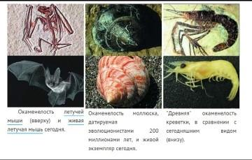

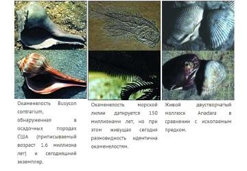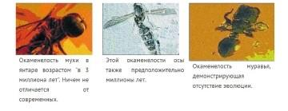
Скажите, друзья, если все эти виды
животных и растений не эволюционировали за 50, 100 или даже 200 миллионов лет,
как считают эволюционисты, тогда почему мы должны верить, что они вообще
эволюционировали? Живые ископаемые - это реальное
доказательство точности, с которой животные,
растения и насекомые воспроизводятся "по роду своему", как и сказал
Господь в Своем Слове.
- Хм, получается, что не существует
и никогда не существовало эволюционного процесса, превратившего бактерию в
человека? И история первых глав Бытия - это истинная
история о сотворении мира Богом? И все эти австралопитеки, питекантропы и
неандертальцы на самом деле не существовали? Надо серьезно задуматься об этом!
|
- Пока ваш друг думает, вы,
ребята, разгадайте мою загадку. |
|
Дети по
картинке окаменелостей угадывают, что это. |
|
Соберите по порядку буквы от самой маленькой до самой большой и узнаете место следующего этапа: |
|
жр Нплаи сп ея |
Этап
4
Уникальность
творения
Смотритель ползает по земле с лупой,
рассматривает насекомых (можно детям показать кого-то из них). «Скептик»
обращается к смотрителю:
- Поликарп Львович, здравствуйте! Кого Вы там ищите?
- Тсс! Почти поймал! Какой
красавец!
- Да кто же?
- Кто-кто! Жук скричер фиолетовый!
Ну вот, уполз... Потерял...
- Простите, пожалуйста, что помешали Вашей охоте!
- Такие экземпляры весьма редко попадаются. Творец наш просто удивительный! Не перестаю восхищаться Его творениями! И
жизни не хватит, чтобы всех отыскать и изучить!
- И Вы про Творца! Того, Кто Вселенную за 6 дней
сотворил?
- Конечно, разве есть другой столь великий и мудрый Творец?!
- И чем Он вас всех так восхищает?
- Вы только посмотрите вокруг: какая красота! Бездонное голубое небо, бескрайний космос... Разве Вы никогда не восхищались
полетом орла или пением соловья? А лазурное море, а горные озера, снежные
вершины гор, многоцветье лугов! А тысячи видов восхитительных животных - снежный барс, амурский тигр, гренландский тюлень, антилопа куду...
- Стоп-стоп, можете не продолжать, животных все мы любим! Я особенно обожаю
своего Барсика! И Вы утверждаете, что у всех у них один Творец? Откуда Вы это
знаете?
- Посмотрите на этого жука (показывает фото жука-бомбардира – рис. 3). Дело в том, что внутри брюшка этого жука, находятся
две камеры, в одной пероксид водорода, а в другой гидрохинон (показывает
схему-описание – рис. 4). Сами по
себе они не представляют опасности, но при их смешении получается сильная
химическая реакция! В каждой камере есть канал, по
которому каждый элемент попадает в камеру сгорания и
мгновенно на выходе выстреливает горючей смесью, достигающей температуры в 100 градусов! Это защитное
оружие жука-бомбардира. Удивительный факт
заключается еще в том, что жук стреляет с невероятной
точностью в своего врага. Тот, Кто поместил в него эти два вещества, должен был
хорошо знать химию. Иначе малейшая неточность, и жук
бы просто взорвался. Это говорит о том, что он должен был возникнуть в один
момент с уже встроенными в него камерами с химическими элементами и камерой для их смешивания, что напрочь перечёркивает
всю теорию эволюции. Чьей силой
и волей, по-вашему, появился на земле этот чудесный представитель так называемых Вами «букашек»? -
Ох, не хотел бы я встретиться с ним один на один. Еще ошпарит своим 100-
градусным зарядом!
А теперь с помощью моего задания вы
узнаете еще кое- что интересное о творении Божьем. Самый
эрудированный из вас получит приз! А задание такое:
я буду зачитывать факты о представителях животного мира, кто догадается, о ком
идет речь, поднимает руку. Если его ответ правильный,
он вытягивает из этой кастрюли «макаронину» (показывает кастрюлю с крышкой, из- под крышки
свисают отрезки пряжи-«макаронины» разной длины). В конце игры тот, у кого
связанные друг с другом «макаронины» окажутся длиннее, получит от меня приз (любая сладость, связанная с живым творением – мармеладные червячки, шоколадный заяц и т.п.)! Итак, начинаем (Поликарп
Львович задает вопросы, услышав правильный ответ,
показывает фото животного в компьютере):
- Ø Этот зверек — ближайший родственник белок.
У него вдоль спины идут пять тёмных полосок.
Именно он послужил прототипом при создании главных героев детского
мультфильма «Чип и Дейл спешат на помощь» (бурундук).
- Ø Это животное покрыто иглами, которые слабо держатся. Хищник, попытавшийся схватить этого зверька рискует сам стать
на него похожим из-за иголок, которые зверёк в
нем оставит (дикобраз).
- Ø Это животное — африканский житель, любящий селиться в наиболее открытых и пустынных
местах. Представители этого вида живут колониями и высматривают врага,
стоя на задних лапах столбиками. В мультипликации этого зверька можно
встретить среди главных героев диснеевского мультфильма «Король Лев» (сурикат).
- Ø Эта кошка — самая крупная среди семейства
кошачьих. Из-за угрозы исчезновения охота на нее сегодня запрещена во всем
мире. Среди этих животных встречаются людоеды. Именно такой
был описан в знаменитой сказке Киплинга «Маугли» (тигр).
- Ø Эта птица имеет длинные ноги и гибкую шею. Цвет оперения этих птиц
зависит от того, что они едят. В зоопарках, чтобы сохранить их ярко-розовый цвет, их кормят продуктами, богатыми
природным пигментом каротином (фламинго).
- Ø Это животное — единственное из семейства псовых меняет зимой
окрас шерсти. Представители это вида обитают за Северным Полярным кругом (песец).
- Ø Этих рыб за их прожорливость
обзывают речными гиенами. А еще они умеют издавать различные звуки. Фраза
«молчаливы как рыба» сказана явно не про них (пираньи).
- Ø Это животное — самая большая из сохранившихся до наших дней ящериц. Их разновидность, живущую на острове Комодо, даже называют драконом (варан).
- Ø Эта ящерица умеет вращать каждым глазом по отдельности и является
обладателем длинного языка, с помощью которого она ловит насекомых, может
менять окраску тела (хамелеон).
- Ø Это хищник. Похож на большую собаку. Называют его санитаром леса, так
как он в
первую очередь нападает на больных и ослабленных животных (волк).
|
Ø Это мохнатый тяжеловес среди хищников. От
холода его спасает толстый слой жира. Морды у
этих зверей вытянуты, как у собак. Глаза и уши
очень маленькие, зато когти огромные. Едят корни, ягоды, орехи. Встречают и
черные, и темные, и бежевые, и даже ярко-рыжие их представители. Любимое их
лакомство – мед (медведь). |
|
Команда, справившаяся с заданием, получает фрагмент артефакта; владелец самой длинной
«макаронины» – приз. Местонахождение следующего этапа нужно составить из букв,
которые дети получают по одной за каждую названную библейскую историю, в которой
упоминаются какие-либо животные или птицы. Дети могут вспомнить следующие
истории: Даниил в львином рве (львы), Иона (кит), Самсон (убивает льва), притча
о потерянной овце, приношение Исаака в жертву
(овен), сотворение мира, въезд Иисуса в Иерусалим (осел), Иисус - Агнец Божий,
Ной (голубь, ворон), вороны кормят Илию.
Этап
5
Всемирный потоп
Смотритель: археолог Аркадий Богданович (одет, как турист,
собирает рюкзак, кладет в него лупу, сматывает веревку, привязывает к рюкзаку
лопату).
«Скептик» начинает беседу:
- Аркадий Богданович, приветствуем
Вас!
- Лупу взял, фляжку, компас, мои очки – где мои очки???
- Аркадий Богданович!!!!
- А, без очков вас не сразу заметил, здравствуйте,
ребята!
- Простите, что отвлекаем... Вы собираетесь в очередную археологическую
экспедицию?
- Да-да, именно туда! На Араратских горах обнаружили силуэт Ноева Ковчега. Я еду
туда, чтобы убедиться в том, что это именно он!
- Ноева Ковчега? И Вы верите в эти сказки?
- Вот Вы, ученый,
археолог со стажем, прекрасно знаете, что на протяжении миллионов лет
откладывались слои земли. Неужели есть доказательства именно всемирной катастрофы, такой как
потоп?
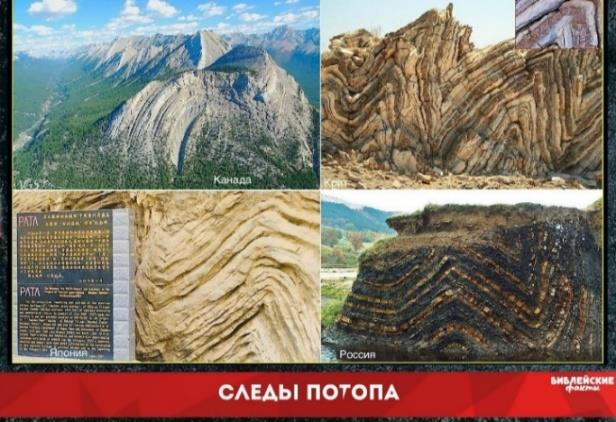
- А посмотрите еще на это фото (показывает детям рис.). Во многих горных участках слои пород толщиной
в тысячи метров оказываются изогнутыми, не подвергаясь при этом разломам.
Почему? Научное объяснение заключается в том, что вся последовательность слоев
отложилась очень быстро. Профессор геологии доктор Снеллинг
подсчитал, что на такое отложение ушло менее года. Это также вполне
подтверждает теорию Всемирного потопа.
- Интересная все-таки у вас, археологов, работа! А вот
скажите, в этих горных слоях, на высоте тысяч метров находили окаменелости, к
примеру, морских существ? Или скелеты рыб в пустыне?
- Конечно! Таких находок очень много.
- Расскажите, пожалуйста! Так интересно!
В Египетской
пустыне по сей день находят скелеты китов в огромных
количествах, которые остались от потопа. (Показывает рис.
7). Это
говорит о том, что, когда воды потопа уходили, киты остались на обмелевшем дне.
По рассказам местных жителей, часть скелетов
засыпаны песком. Сейчас следы морских животных
находят даже рядом с пирамидами. (Показывает рис.
8). К
примеру, около Сфинкса найдены морские обитатели. Скелет
морского ежа на одном из каменных блоков второго уровня древнего храма. Эти окаменелые
морские ежи не водятся в реках Нила, только в море. Это все следы Всемирного
потопа.
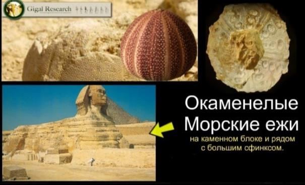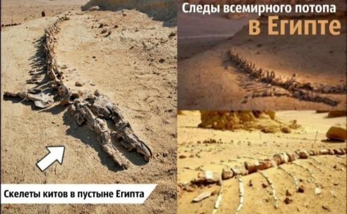
- Очень-очень интересно! Какая
все-таки занимательная это книга, правда, ребята? (Указывает на Библию).
- Полностью согласен с Вами! Поэтому вот уже несколько десятков лет ежедневно я
изучаю Слово Божье! И вам, дети, советую! А сейчас
предлагаю вам выполнить задание, если хотите получить от меня знаменитый артефакт! Ваша задача – всей командой уместиться на этом покрывале и удержаться минимум
5 сек. Легко, говорите? Второй этап задания не так
прост: нужно будет сложить это покрывало пополам и также дружно уместиться на
нем, как на своем ковчеге спасения! Касаться земли нельзя, «утоните»! (Можно усложнять задание: потом сложить покрывало
вчетверо и т.д., но до разумных пределов).
Местонахождение следующего этапа
нужно расшифровать, используя Азбуку моряков.
Этап
6
Христос
воскрес ?∨!
Смотритель стоит у стола и проводит опыт. Смешивает металлические детали и
неметаллические. Подносит к этой смеси магнит и
наблюдает, как металлическая пыль отеляется остальных и прилипает к магниту.
«Скептик» спрашивает:
- Добрый
день! Простите, что вмешиваемся, но очень интересно, что Вы делаете? - Здравствуйте! Провожу опыт. Однажды у Ньютона спросили,
как он может верить в то, что Бог воскресит людей,
когда их тела давно истлели, рассыпались в прах и перемешались с землей? Тогда ученый показал
этот опыт: смешал землю с металлической пылью, а
затем поднес магнит – металлическая пыль сама отделилась от земли. Ньютон
сказал: «Если нам легко это сделать, то Богу, Который
из небытия в бытие привел весь мир, нет никаких затруднений воскресить людей».
- Что Вы хотите этим сказать, что
мертвые могут воскресать? Даже как-то страшно! - Это
не страшно, это прекрасно! Бог, воскресивший Христа
из мертвых, однажды воскресит всех верующих в Него и возьмет к Себе на небеса!
- В это невозможно поверить! Мертвые не могут воскресать: об этом говорит и общечеловеческий опыт, и наука. Я, например, не видел ни
одного воскресшего мертвеца! Это противоестественно! Всякая жизнь кончается
неизбежно смертью!
- А Вы праздник Пасхи отмечаете?
- Ну как же! Конечно! Куличи, яйца крашеные... Я же русский человек, верен традициям!
- А чему посвящен праздник Пасхи?
- Весне, куличам, яйцам...
- Не совсем так! Верующие в тот день говорят друг другу: «Христос воскрес!» И
им вторят: «Воистину воскрес!» Пасха – это празднование воскресения Христа,
Сына Божьего и Спасителя мира!
- То есть Вы хотите сказать, что Он воскрес на самом деле? И больше не умирал? Так где же ваш Христос сейчас? Я
Его не встречал!
- Господь Иисус Христос после Своего воскресения вознесся к Своему Отцу – Богу
– на небеса. И настанет день, когда Он вернется за Своей
Церковью. Тогда все мертвые, веровавшие в Христа, воскреснут и вознесутся к
Нему!
|
Божий план осуществился: Христос воскрес из мертвых и
воскресит верующих в Него в последний день! - А можно поподробнее, что за Божий план? В какой
такой последний день
воскреснут мертвые? Я должен к нему подготовиться! - Хорошо! Я объясню вам этот план через игру в «Крестики-нолики». Есть
Бог, Он велик и бесконечен – как круг не имеет конца (прикрепите нолик в верхнем
левом углу поля). У Бога есть противник – бывший
ангел по имени Люцифер (прикрепите крестик вверху в центре). Он был самым
красивым ангелом на Небесах, но возгордился, восстал против Бога, и Творец
свергнул его на землю (нолик в верхнем
правом углу). Люцифер не хотел сдаваться, и забрал с собой на землю множество своих слуг. Он в образе змея
искусил Еву, и та ослушалась Бога, совершив грех, как и ее муж Адам. С тех
пор люди были отделены от святого Бога и несли крест греха до тех пор, пока
не умирали и не возвращались в землю (крестик в центре справа). Но Бог всемогущий и любящий.
У Него всегда есть самый верный
ход. (Нолик внизу
справа). Он придумал план, как спасти людей
от греха и от наказания – вечного отделения от Бога. Господь послал на землю
Своего Сына Иисуса Христа, чтобы Он, праведник, умер за грехи людей, чтобы их грех был искуплен кровью. Люцифер |
|
торжествовал, когда Иисус умер на
кресте (крестик в
центре внизу). Но для Бога нет ничего невозможного, и Он
воскресил Своего Сына из мертвых на третий день (нолик внизу слева). Люцифер до сих пор живет на земле и искушает людей
согрешить, отвернуться от Бога. Он нашептывает людям: «Ты же еще молодой! Живи в свое удовольствие, бери от жизни все! А
когда состаришься, придешь к своему Богу!» (Крестик слева в центре). Сегодня Бог
предлагает тебе выбор – кому ты поверишь, кому посвятишь свою жизнь (пустая ячейка
в центре и выбор – крестик или нолик). Не поддавайся обману Люцифера! Последуй
за своим Творцом, и ты одержишь в своей жизни свою
самую главную победу в борьбе за Небеса! Ты воскреснешь вместе со святыми и
будешь вечно с Богом! (Позвольте детям взять одну из карточек
– либо крестик (символ греха и знак Люцифера), либо нолик (символ великого,
вечного, бесконечного в Своей любви Бога). Пусть
дети положат свои карточки в центр. Если все положили нолики, проведите |
|
черту по диагонали, что значит выигрыш). |
ОХО Х?Х ОХО
Этап 7
Добро и зло
Детей встречают
актеры: атеист, бабуля, Кузьминишна, народ (среди
народа может быть смотритель данного этапа).
|
Краткое содержание сценки: В глухую деревню
приезжает атеист и пытается устроить антирелигиозную пропаганду. Но мудрость неграмотной старушки разрушает его планы. Выходит модный блогер,
как бы разговаривая с собой. Блогер : Так, развесим плакаты и поставим сцену. Я им всем
докажу, что Бога нет. И таких, как я, много. И мы, юные и продвинутые, несем
на своих плечах эту антирелигиозную пропаганду. И наши ряды пополняются каждый день. Скоро нас будет сотни, тысячи. Выходит народ, обсуждая
происходящее. |
|
Народ :
Бабуля: Ой, какой вумный! будет ни одного верующего в Бога. Потому что Его нет! Замечая людей,
он обращается к ним. небо и скажем, что Бога нет! /показывая пример, сам машет кулаком вверх/ Из толпы народа
выходит бабуля. Бабуля: Послушай милок. Оно то может быть и так, мы
ведь люди серые, окодемиев то мы не заканчивали. Ты
лучше вразуми нас вот чему. /Стоит, размышляя/ Если Бога нет, то тогда Кому мы кулаком машем, а?
А если Бог есть, то я боюсь этого делать. Блогер не знает что ему ответить. Коммунист: Так ведь... Так я ж... |
|
Бабуля : Пойдем, Кузьминишна, нам надо еще огород перекопать. |
Смотритель обращается к
детям:
- Ребята, в каждом из нас живет некий внутренний голос, который порой помогает принять
правильные решения. Как в случае из сценки. Что-то подсказало бабуле не махать
в небо кулаком. Что, как вы думаете? Правильно, совесть. Это словно внутренний закон, который
останавливает нас порой перед возможным совершением
аморальных поступков. Апостол Павел пишет об этом так (читает из Библии):
«Язычники, не имеющие закона, по природе законное делают, то, не имея закона,
они сами себе закон; они показывают, что дело закона у них написано в сердцах,
о чем свидетельствует совесть их и мысли их, то обвиняющие, то оправдывающие
одна другую» (Рим. 2: 14-15). Этот нравственный
закон не зависит ни от чего внешнего: государственного устройства,
времени, религиозных верований и т.п. Он не зависит и от самого человека. Этот
закон вложен в человека любящим и праведным Творцом.
«Скептик» сомневается:
- А почему сразу Творцом? Может, у
бабули сработал закон самосохранения? Как помашу кулаком, а Бог молнию с неба
пошлет! Это же естественно! Инстинкт для выживания!
- Подумайте вот о чем: с одной
стороны, в минуты опасности любому человеку страшно и хочется убежать или
спрятаться. Срабатывает естественный закон
самосохранения. А с другой стороны, если человек
видит, что в опасности находится другой человек, то другой инстинкт велит пойти ему
на помощь. Что это? В человеке помимо природных, инстинктивных порывов звучит
вопрос: что выбрать? Какому инстинкту следовать? Понятно, что этот внутренний голос не принадлежит ни одному из природных
инстинктов. Он явно возвышается над ними. Человек может даже пожертвовать своей жизнью ради спасения другого человека, хотя смысла в
такой жертве очень часто нет. Это говорит о том, что
существует абсолютный нравственный
закон – закон, заложенный в нас Самим Богом!
- Если, по Вашим словам, все люди такие
совестливые, то скажите тогда, почему на земле так много зла, несправедливости,
лжи, насилия и войн? Если Бог такой
добрый, великий и любящий, почему Он не избавляет невинных людей от страданий? Как Он может на все это смотреть?
- Этот вопрос очень сложный. Бог действительно
любит людей и все Свое творение. И Ему очень грустно
смотреть на то, что творится на нашей грешной Земле. В поисках ответа на этот вопрос мы не
должны забывать о свободе человека. Бог сотворил человека свободным. А если
человек обладает свободой, то он может делать не
только добро, но и зло. «Не Бог причиной зол во аде,
а мы сами, потому что началом и корнем греха от нас зависящее - наша свобода»,
- пишет св. Василий Великий. Бог дал Адаму и Еве в
Эдемском саду свободу выбора – съесть плод с Дерева познания добра и зла или
остаться послушными Творцу и жить с Ним вечно в Раю.
- Неужели Бог лишил Адама и Еву
бессмертия за совершенный ими грех?
- Нет, они сами лишили себя бессмертия. Человек, ослушавшись Бога, сделал шаг
от Него. Бог есть жизнь, следовательно, человек, сделав шаг от жизни, тем самым
сделал шаг в сторону смерти. Но и после того, как Адам с Евой
покинули рай, Бог не оставляет человека и для нашего
спасения и блага использует наши же ошибки. Поэтому можно считать, что
страдание – это путь к спасению. Бог истребляет зло, а не от Бога зло.
- И все-таки это несправелдиво заставлять страдать
невинных людей!
- Бог доказал Свою справедливость, отдав на смерть Своего Собственного Сына
Иисуса Христа. «Христос, чтобы привести нас к Богу, однажды пострадал за грехи
наши, праведник за неправедных» (1 Петра 3:18). (Читает из
Библии). Иисус взял
наказание на Себя за наш с вами грех, Он понес тяжкие мучения вместо тебя и
меня. Ведь все мы грешники. Каждый хоть один раз
нарушил в своей жизни Божий закон! Но если мы
уверуем в Иисуса Христа как своего Спасителя, покаемся в своих грехах, Он снова
подарит нам вечность в Раю в Его славе!
- Ну что, ребята, вы уже решили для себя, какой знак
препинания вы поставили бы для себя после слов «Бог есть...» - вопросительный или восклицательный?
Возможно, кто-то из вас сделал выбор в пользу вечности с Богом и поставил знак восклицательный? Похоже, я склоняюсь к этому! Можно я
помолюсь с вами? Если хотите, присоединяйтесь! Верю,
что Всемогущий Бог нас слышит!
«Скептик» совершает молитву. Затем дополняет:
- Слава Богу! Теперь я и (перечислите тех детей, кто тоже совершил молитву
покаяния)
присоединяемся к огромному числу детей Божьих по
всему миру! Если вы еще не приняли решение присоединиться к Церкви Христовой, и ваш знак препинания после слов «Бог есть...»
- вопросительный, не откладывайте
надолго это решение. Мы не знаем, в какое русло повернет наша жизнь. Бог ждет
каждого и
слышит даже тихий
шепот наших душ везде, где бы мы ни находились! ... А задание для вас на этом
этапе будет такое:
Посчитайте, на скольки языках есть библия.
Организаторам: составьте математический пример –
цифры в этом примере дети должны сначала найти,
затем вставить в пример и посчитать. Например: количество команд + количество
лавочек в зале * количество минут, отведённых в
расписании на обед - количество полных лет директора воскресной
школы - количество окон в здании столовой + сумма
цифр на номере машины директора : количество ступенек
на второй этаж ... + количество столбов в заборе
вокруг клуба =? Правильный ответ: 232 (во всех
существующих странах мира есть христиане). Если данный
пример составить будет сложно, можете воспользоваться альтернативным вариантом
задания: из первых букв имен детей собрать качество
христианина, живущего по совести, или плод Духа: «Плод
же духа: любовь, радость, мир, долготерпение, благость, милосердие, вера,
кротость, воздержание. На таковых нет закона» (Галатам
5:22-23).
По завершении всех заданий дети
получают все фрагменты артефакта и складывают из него изображение рыбы ΙΧΘΥΣ
(«ихтис»). Расскажите детям о том, что это греческое слово переводится как
«рыба» и представляет собой аббревиатуру гречеcкой же фразы «Иисус Христос, Сын Божий, Спаситель».
Изображение рыбы в первые века христианства было своего рода визуальным
воплощением главной богословской
идеи веры в Спасителя Иисуса Христа. Если есть такая возможность, подарите всем
участникам квеста рыбок – брелки, подвески, браслеты...